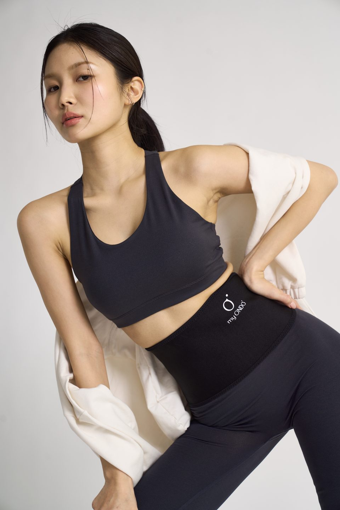
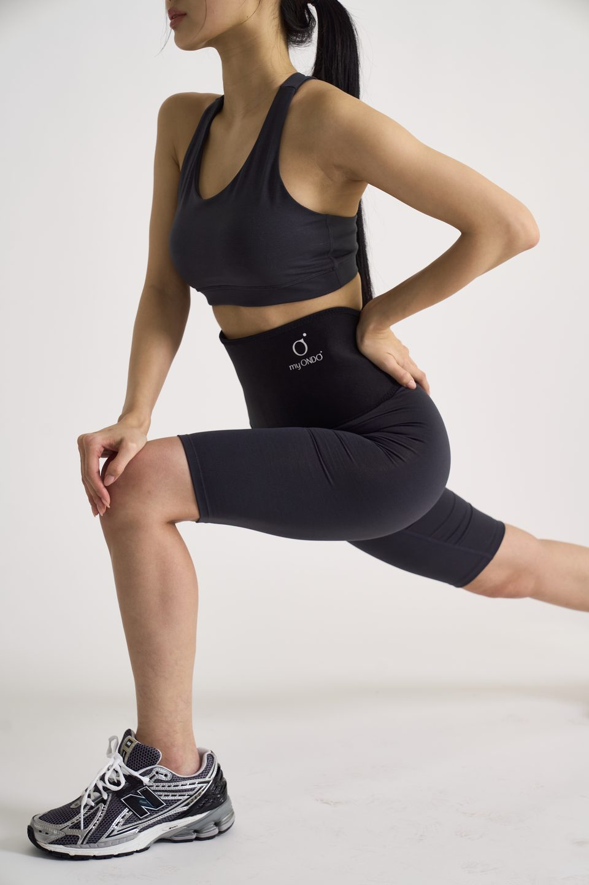
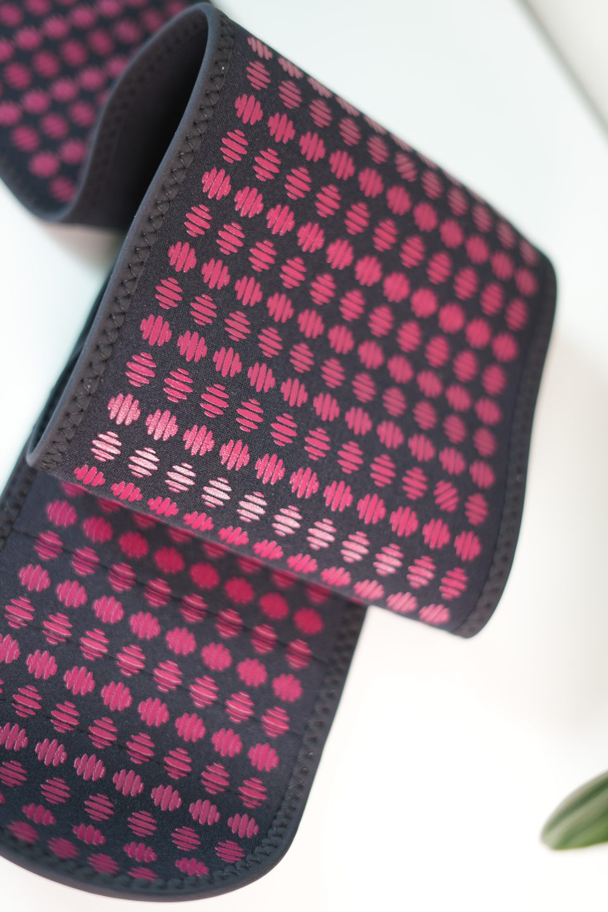
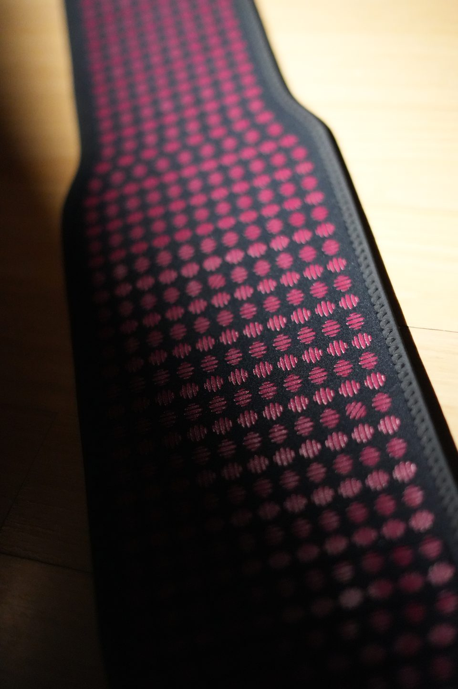

2026 리뉴얼 · 버건디 도트물 끓이고, 충전하고, 붙이던
배 보온.
이제 두르는 밴드 하나로
전기도, 충전도, 데우기도 필요 없습니다.
필요한 건 오직 나의 체온.
마이온도 원적외선 심부발열 밴드
같은 공간인데,
나만 추운 날들
여름 냉방 속에서도, 겨울 외출길에서도
보온을 따로 챙기는 사람들이 있습니다.
보온 관련 공개 게시글·후기 사례를 바탕으로 만든 상황 예시입니다. 실제 발언 인용이나 마이온도 구매 후기가 아닙니다.
배에 붙일 핫팩까지 챙기는 아침
여름에도 배 쪽이 유난히 차갑게 느껴져, 보온을 따로 챙깁니다.
사무실에선 가디건을 꺼내 입는 날
에어컨 온도를 조절해 달라고 부탁하는 일도 매번 신경 쓰입니다.
추위가 가시지 않는 날
껴입으면 얼굴은 화끈거리고, 일할 때는 움직이기 불편합니다.
쓰고 나면 또 버리고
반복해서 사는 비용도, 쌓이는 쓰레기도 마음에 걸립니다.
유난이 아니에요.
따뜻하게 지내려고 매번
하나 더 챙겨 왔을 뿐이죠.
따뜻해지려고
이만큼 하고 있었다면
물 끓여서 담고 버리는 게 일이에요.
새로 뜯어야 하고요.
온열 제품 사용 후기에 나온 불편 사례를 재구성했습니다.
따뜻함이 필요한 날은 많은데
준비가 번거롭게 느껴졌다면,
방법을 바꿔볼 때입니다.
배 보온, 이제
'얼마나 뜨거운가'보다
'얼마나 간편한가'로
매일 쓰려면 준비와 뒷정리가 가벼워야 합니다. 사용 방식만 놓고 비교해 보세요.
| 물주머니 | 전기 찜질기 (유선·충전식) | 붙이는 핫팩 | 마이온도 | |
|---|---|---|---|---|
| 준비 | 물 끓여 담기 | 전원 연결 또는 충전 | 포장 뜯어 붙이기 | 감고 벨크로 고정 |
| 전원 | 불필요 | 필요 | 불필요 | 불필요 |
| 쓰고 나서 | 물 버리고 말리기 | 선 정리 또는 재충전 | 버리고 새로 구매 | 풀어서 보관 |
온수 주입식 물주머니, 일회용 부착형 핫팩 등 제품군별 일반적인 사용 방식 비교이며, 성능 비교가 아닙니다.
필요한 건 오직,
나의 체온
마이온도는 전원 장치가 없는 밴드입니다.
안쪽 버건디 도트 면이 몸 쪽을 향하도록 감아 고정합니다. 데우거나 충전할 일이 없습니다.

처음 두른 날,
아무 느낌이 없을 수 있어요
마이온도는 두르자마자 뜨거워지는 제품이 아닙니다. 따뜻함을 느끼는 시점과 세기는 사람마다 다릅니다. 처음 사용할 때 참고할 내용을 정리했습니다.
열감이 거의 없을 수 있어요
전원이 없는 밴드라 '켜지는 순간'이 없습니다.
체감 시점은 사람마다 달라요
브랜드 안내 기준으로, 한 시간 남짓에 느끼는 분도 있고 며칠 이상 걸리는 분도 있습니다.
바로 풀어 주세요
과도한 열감이나 따가움·가려움·붉어짐이 생기면 착용을 멈추고 고객센터에 문의해 주세요.
따뜻함이 다시 느껴질 수도 있어요
브랜드 안내에 따르면, 벗은 뒤 샤워나 운동을 할 때 따뜻함을 다시 느끼는 경우가 있습니다. 느끼지 못하는 분도 있으며, 지속 시간을 보장하지 않습니다.
느낌이 계속 없다면, 이것부터 확인하세요
- 도트 면이 피부에 닿았나요?
옷 위가 아니라 맨살에 닿아야 합니다. - 너무 느슨하거나 너무 조이지 않나요?
코르셋처럼 조이지 말고, 들뜨지 않을 만큼만 감아 주세요. - 피부가 많이 건조한가요?
브랜드 안내에 따라 밴드 안쪽에 물을 살짝 뿌린 뒤 착용해 보세요. 매번 하실 필요는 없습니다.
그래도 느낌이 없다면 고객센터 1577-1857 또는 카카오톡 채널 'myondo'로 착용 상태를 알려 주세요.
두르는 데 필요한 건
벨크로 한 번
매번 새 포장을 뜯거나 선을 꽂을 필요 없이, 아침에 옷 입기 전 허리에 감고 고정하면 됩니다.

하의를 밴드 위로 덮어 입을 수 있어요.
착용 방법 예시는 리뉴얼 전 제품으로 촬영했습니다. 현재 제품의 안쪽 도트는 버건디입니다.
핫팩을 찾던 순간에,
미리 둘러 두세요
착용 직후 열감이 없을 수 있으니, 필요해지기 전에 미리 두르는 습관이 잘 맞습니다.

집을 나서기 전에출근 준비할 때 둘러 두면, 이동하는 동안 충전하거나 데울 일이 없어요.

추운 사무실·매장에서전원이 필요 없어서 콘센트가 없는 자리에서도 쓸 수 있어요.

평소처럼급할 때 꺼내기보다, 평소 루틴으로 두르는 분들께 맞습니다.
2026년,
안쪽이 버건디 도트로
바뀌었어요

시그니처 버건디 도트밴드 안쪽 도트 컬러가 블랙에서 버건디로 바뀌었습니다.
원료를 새로 바꿨습니다도트에 들어가는 원료를 변경했습니다.
S·M을 하나로, 새 M 사이즈기존 S·M 착용 범위를 통합한 새 M 사이즈입니다. L은 그대로입니다.
제품에 쓰인 소재
상품정보에 표시된 재질입니다.

말 대신,
등록된 서류로 보여드릴게요
마이온도 관련 기술의 한국·미국·일본·중국 특허 등록 자료입니다.
특허 등록은 기술에 대한 권리를 뜻하며, 제품의 효능이나 안전성을 인증하는 것은 아닙니다.
개발부터 생산까지,
국내에서
국내 생산 공장의 원단 생산 과정
허리둘레를 재고
사이즈를 골라 주세요
줄자로 허리둘레를 잰 뒤 아래 범위와 비교해 주세요. 두 범위가 겹치는 84~88cm라면 구매 전에 문의해 주세요.

- 허리둘레
- 60~88cm
- 밴드 길이
- 107cm
- 밴드 폭
- 16cm / 13cm
- 허리둘레
- 84~106cm
- 밴드 길이
- 120cm
- 밴드 폭
- 16cm / 13cm
도트 면은 안쪽으로,
조이지 말고 감싸듯이

STEP 1
도트 면이 몸 쪽으로 오게 펼쳐요도트 면이 맨살에 닿아야 합니다.
STEP 2
허리에 감고 벨크로를 붙여요들뜨지 않을 만큼만. 세게 당기면 원단이 늘어나 도트가 상할 수 있어요.
STEP 3
밴드 위로 하의를 덮어 입어요하의 허리선이 밴드를 살짝 덮도록 입을 수 있습니다.착용 방법 예시는 리뉴얼 전 제품으로 촬영했습니다.
오래 쓰려면,
이렇게 관리해 주세요
구매 전에
꼭 확인해 주세요
이런 분은 착용하지 마세요 (브랜드 안내)
- 임산부, 14세 미만 어린이·유아
- 아토피·습진 등 피부가 예민한 분, 심한 알레르기 체질
- 상처나 피부 질환이 있는 부위
- 심장 보조기·인슐린 펌프를 사용하는 분
- 수술 후 회복 중이거나 악성 빈혈이 있는 분
- 술에 많이 취한 상태
- 부항·찜질·사우나 직후 (하루 정도 지난 뒤 착용)
마이온도는 의료기기가 아닙니다. 질병의 예방·치료를 목적으로 사용하지 마세요.
자주 묻는 질문
처음 둘렀는데 아무 느낌이 없어요. 불량인가요?
언제부터 따뜻해지나요?
착용하다가 너무 뜨거워요.
벗고 샤워하는데 다시 따뜻해졌어요.
착용 부위에 도트 자국이 남아요.
세탁은 어떻게 하나요?
사이즈가 애매해요.
교환·반품이 되나요?

데우는 수고는 내려놓고,
따뜻함은 나의 체온으로.
배송 안내
- 평일 오전 11시까지 결제 완료 시 당일 출고됩니다.
- 평균 배송 기간은 1~3일입니다.
교환·반품 안내
- 상품 수령 후 7일 이내, 미개봉 상태일 때 교환·반품이 가능합니다.
- 단순 변심에 의한 교환·반품은 왕복 배송비를 고객님이 부담합니다.
고객센터
- 1577-1857 · myondo5757@naver.com
- 운영 시간: 평일 10:00~17:00
- 카카오톡 채널: myondo
상품정보 제공고시
| 제품명 | 마이온도 원적외선 심부발열 밴드 |
|---|---|
| 재질 | 네오플란 원단, 그래핀, 게르마늄, 규소, 미네랄 융복합 추출물, 티타늄, 바이오스톤 등 천연광물 |
| 사이즈 | M: 허리 60~88cm, 길이 107cm / L: 허리 84~106cm, 길이 120cm (폭 16·13cm) |
| 제조국 | 대한민국 |
| 판매원 | 마이온도 |
| 취급 시 주의사항 | 위 '구매 전에 꼭 확인해 주세요' 참조 |
| 품질보증기준 | 관련 법 및 소비자분쟁해결기준에 따름 |
| 고객센터 | 마이온도 1577-1857 |